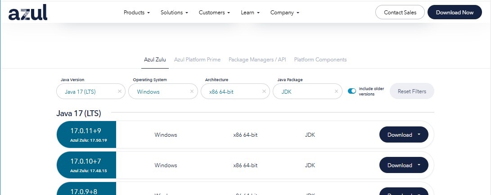
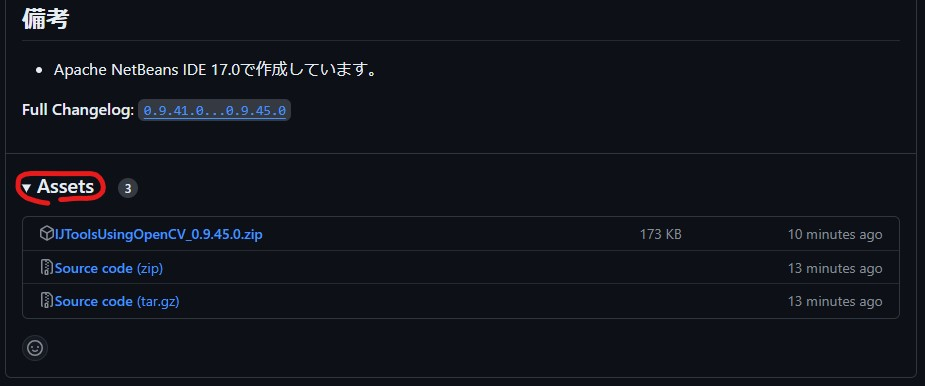

OpenCVの関数の一部を利用するImageJ用プラグイン「IJToolsUsingOpenCV」を作りました。
目的
- 手軽にOpenCVの関数を利用したい
- OpenCVの関数の処理の結果を簡単に確認したい
- ImageJにない機能を追加したい
利用手順
IJToolsUsingOpenCV 0.9.41.0以降、JAVA17でImageJを動作させる必要があります。
これはOpenCV4.7.0以降を使うためです。詳細な理由はこちらをご覧ください。
利用手順は以下の通りです。
(1) JAVA17のインストール
(2) OpenCVのダウンロードと、適切なフォルダへのコピー
(3) IJToolsUsingOpenCVのダウンロードと、適切なフォルダーへのコピー
(4) JAVA17からImageJの起動
(1) 最近のImageJはAzul Systemsが提供しているOpenJDKを使っているようです。 こちらからzipをダウンロードしてください。
- Java Version
- JAVA17(LTS)
- Operating System
- Windows
- Architecture
- x86 64-bit
- Java Package
- JDK

ダウンロードの形式はmsi。
インストールします。普通に[Next]をクリックしていくとPATHも通してくれるはずです。
(2) GitHubのOpenCVのページのreleasesからexe形式のものをダウンロードします。
exeを実行し、展開します。
opencv-***.jarを、ImageJの/pluginsフォルダ直下にコピーしてください。
opencv_java***.dllを、ImageJ.のルートフォルダか/lib/win64フォルダにコピーしてください。
(3) こちらからzipをダウンロードし展開して、OpenCVとWakuフォルダをImageJの/pluginsフォルダにコピーしてください。

(4) ImageJ.exeではなくImageJ.batなどを作成し以下を実行します。
start javaw -jar ij.jarあとは、OCV__LoadLibraryプラグイン（OpenCVのdllのロード）を最初に実行してください。
プラグインの一覧
プラグインの一覧をあげます。リンク先のあるものには簡単な説明があります。
- OCUtil_BluredImageDiff：平滑化差分
- OCUtil_CntrlUvcCamera：UVCカメラから画像の取得
- OCUtil_MeasureWidth：エッジ間距離の測定
- OCV__LoadLibrary
- OCV_AdaptiveThreshold
- OCV_BilateralFilter
- OCV_Blur
- OCV_BoundingRect
- OCV_Canny
- OCV_ConnectedComponentsWithStats
- OCV_ConvexHull
- OCV_CornerHarris：Harris Corner Detection
- OCV_DistanceTransform
- OCV_EqualizeHist
- OCV_FeatDet_1st_SetQuery：特徴点の抽出
- OCV_FeatDet_2nd_Match：特徴検出
- OCV_FitEllipse
- OCV_FloodFill
- OCV_GaussianBlur
- OCV_GetAffineTransform
- OCV_GetPerspectiveTransform
- OCV_GetRotationMatrix2D
- OCV_GrabCut
- OCV_HoughLines
- OCV_HoughLinesP
- OCV_InteractiveGrabCut
- OCV_InvertAffineTransform
- OCV_Laplacian
- OCV_MatchTemplate
- OCV_MedianBlur
- OCV_MinAreaRect
- OCV_MinEnclosingCircle
- OCV_MorphologyEx
- OCV_Resize：サイズ変更
- OCV_Scharr
- OCV_Sobel
- OCV_Threshold：2値化処理
- OCV_WarpAffine
- OCV_WarpPerspective
- OCV_WarpPolar
- OCV_Watershed
ここから先は上と連携すると便利なプラグインです。
- WK_ChangePixelValue：少し高機能な2値化処理
- WK_GetProperty
- WK_HoughCircles
- WK_HuMoments
- WK_Math
- WK_RoiMan_DisplayedInTheCenter
- WK_RoiMan_Limited
- WK_RoiMan_LinearFitting
- WK_RoiMan_SelectAll
- WK_Wait：待機